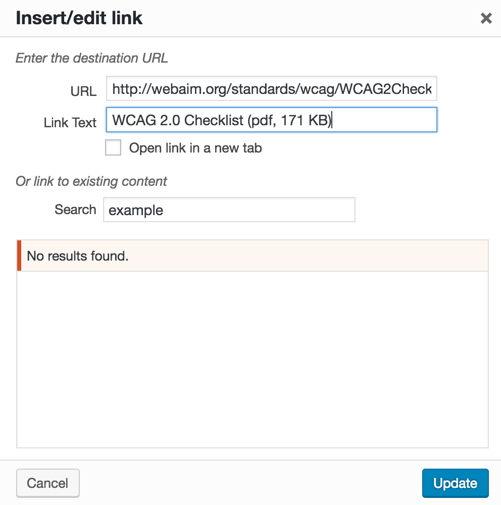

L'enjeu pour l'utilisateur handicapé
L'accessibilité des documents en téléchargement relève des mêmes enjeux que l'accessibilité d'un contenu web. Vous devez structurer un document avec des titres, des listes, etc. pour permettre aux utilisateurs de pouvoir naviguer et se repérer aisément dans le document. Toutes les autres problématiques s'appliquent également : les couleurs, les descriptions d'image, les tableaux, les liens, etc.
Les principaux utilisateurs impactés sont les utilisateurs aveugles, malvoyants ou ayant des difficultés de lecture.
Si votre site est accessible, mais que l'information est transmise à vos utilisateurs via des documents bureautiques (.doc, .pdf, etc.) non accessibles, votre contenu n'est pas accessible. Vous empêchez alors des utilisateurs d'accéder à cette information.
En pratique et en images
De manière générale, vous ne devez pas utiliser les documents bureautiques pour véhiculer une information spécifique ou pour créer le contenu d'une page. Le contenu principal de votre page doit rester le contenu web et le document bureautique ne doit être utilisé qu'à des fins d'impression.
Intégrer un document bureautique dans un site
Lorsque vous mettez un document en téléchargement, vous devez informer l'utilisateur du poids et du format de ce document.
Cette information permet à l'utilisateur de comprendre qu'il s'agit d'un document à télécharger, d'en connaître ses caractéristiques et lui permet donc d'évaluer si oui ou non il va télécharger le document. Concernant le format d'un document, l'information est importante pour un utilisateur pour savoir s'il sera capable de l'ouvrir (nécessité d'un logiciel particulier par exemple), et s'il sera capable de le parcourir (compatibilité du format avec les technologies d'assistance).
Lorsque vous intégrez un document en téléchargement, vous créez un lien dans votre texte. Vous devez spécifier dans le contexte du lien, le mieux étant dans l'intitulé ou le titre du lien, le format et le poids de ce document. Par exemple : « Guide d'accompagnement RGAA 3.0 (pdf, 240 ko) ».
Nous vous renvoyons vers la fiche 6 : Créer du lien sans perdre son chemin pour la création d'intitulé et de titre de liens.
Ci-dessous un exemple d'utilisation du titre de lien dans l'éditeur de texte de Wordpress pour la définition du poids et format d'un document à télécharger.

Note : le développeur de votre site a pu mettre en place une fonctionnalité qui détecte automatiquement les informations de poids et format et les intègre directement dans le titre du lien de téléchargement. Renseignez-vous auprès de votre service informatique sur l'existence de cette fonctionnalité.